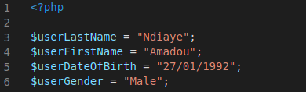
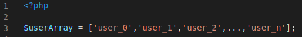
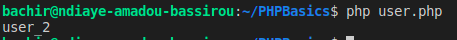
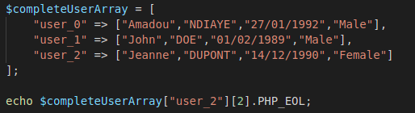
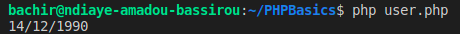
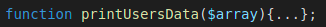

PHP, kezako ?
PHP est un langage de programmation écrit sur la base d'un autre langage de programmation qui est le C. Contrairement au langage C qui est un langage dit "bas niveau", PHP est un langage dit "haut niveau". L'avantage principal des langages de haut niveau est que le programmateur n'a pas à se préoccuper des caractèristiques (gestion de la mémoire entre autres) de l'ordinateur ou l'hôte qui excécute le programme.
Rasmus Lerdorf est le créateur de ce langage. (1994)
PS : Ceci dit, tout bon développeur se doit de s'intéresser au performances des ses programmes qu'il travaille avec un langage bas ou haut niveau.
Pour les plus motivés, le lien vers la documentation de l'histoire officielle de PHP : Histoire de PHP
Comme dans tous langages de programmation, il y'a une syntaxe précise à respecter. Des règles de programmation et d'algorithmie à connaitre.
Les variables ?
Une variable est une chaîne de caractère qui permet de stocker une donnée particulière. Une donnée peut avoir des types différents, pour en lister les plus connus :
- Nombre entier Integer : 1555, -4587
- Nombre décimal Float : -15.0547, 3.14
- Chaîne de caractère String : "John Doe", "Hello-World!"
- Booléen Bool : true (1) ou false (0)
Imaginez que vous travailliez pour AMELI. Votre chef vous demande de créer des variables pour pouvoir stocker les données des utilisateurs dans une base de données. Vous avez de la chance, vous avez un(e) super(be) collègue qui vous a fait une liste non-exhaustive des données à enregistrer. Il ne vous reste plus qu'à rédiger le nom des variables correspondants à chaque donnée. On aura, à enregistrer, pour une personne lambda :
- Son nom de famille
- Son prénom (partons du principe que tout le monde à un seul prénom)
- Sa date de naissance
- Son genre
En PHP, toutes variables doivent commencer par un dollar ($). Un fichier PHP doit également se construire de la façon suivante :
nom_de_votre_fichier.php | ex : base_de_donnees_ameli.php
$nomDeMaVariable | ex : $myName
PHP utilise la convention de nommage camelCase. La première lettre de chaque mot commence par une majuscule, sauf pour le premier mot (et PAS d'espace entre les mots).
Il y'a une variante du camelCase qui est le PascalCase ou Upper CamelCase. Toutes les premières lettres des mots sont écrits en majuscules. Lien vers articles sur les conventions de nommage.
C'est une convention a respester par tous les développeurs, à défaut d'avoir des erreurs de syntaxe en sortie de ses programmes.
Je vous propose une solution parmis temps d'autre :
$userLastName
$userFirstName
$userDateOfBirth
$userGender
Là, on a juste donner un nom à nos variables. Maintenant on va parler d'initialisation et de déclation.
Initialiser une variable = la déclarer + lui donner une valeur
Déclarer une variable = l'instancier sans lui donner de valeur
Je me propose comme première client d'Ameli. L'objectif maintenant est de stocker mes informations quelque part. Pour ce faire, on va créer un fichier PHP contenant toutes ces informations :
user.php
Pour que votre navigateur ou que votre terminal puisse comprendre et interprètrer le PHP, il faut systématiquement mettre des balises PHP à l'intérieur de notre fichier. Le seul fait de mettre .php à la fin de votre nom de fichier ne suiffit pas.
Votre fichier PHP doit ressembler au mien.

Les Tableaux ?
Un tableau est un conteneur qui permet de stocker différentes valeurs de variables. On va créer un tableau qui va stocker les données des clients de chez AMELI. Pour chaque client, on aurra 4 valeurs à stocker (nom, prénom, date de naissance et genre).
Tableau uni-dimensionnel
Un tableau est dit uni-dimensionnel lorsqu'il contient un seul index. Dans notre exmple, on peut avoir un tableau qui contient la liste des clients enregistrès par ordre croissant.

Dans notre exemple, on a n index possibles. Le premier index du tableau commence à 0 (zéro). Si on devait donner une taille/longeur à notre tableau, elle serait de n-1. L'index est renseigné entre crochets juste après la variable.
La fonction echo() (on verra les fonctions un peu plus loin), permet d'afficher la valeur d'une variable. Ici, on veut afficher la valeur de notre variable $userArray à l'index 2. On fera un :
Sortie de console :

On voit bien qu'on affiche la valeur de $userArray à l'index 2.
.
Tableau multi-dimensionnel
Votre chef vous demande de lui créer un tableau dans lequel on pourra stocker tous les clients ainsi que leurs données. Le tout dans le même tableau, c'est possible en PHP grâce aux tableaux multi-dimensionnels.
Un tableau est dit multi-dimensionnel ou associatif lorsqu'il contient au moins deux index.
Créeons un tableau associatif contenant trois clients ainsi que leurs données. Puis affichons le nom de famille de notre troisiéme client(e).

Sortie de console :

Ici, pour accéder à une valeur précise du tableau, on passe par une clef et un index, $completeUserArray['clef']['index_n']
.Les fonctions
En programmation on utilise les fonctions pour effecuter UNE tâche bien précise. Une fonction contient des instructions et une valeur de retour. A une exception près, on peut avoir une fonction qui n'a pas de valeur de retour. Généralement on peut décrire la tâche d'une fonction en commençant par un verbe un verbe : afficher une valeur, comparer deux nombres, calculer une somme...
Votre chef veut vous faire travailler et vous demande de lui écrire une fonction pour afficher tous les clients présents chez AMELI. Cette fonction prendra en paramètre un tableau associatif. Je vous laisse la tâche d'écrire cette fonction qui aurra comme signature :

Si vous avez du mal avec cette partie, je vous conseille de revoir cette quête : Quête 4.2 sur les tableaux multidimensionnels - Odyssé